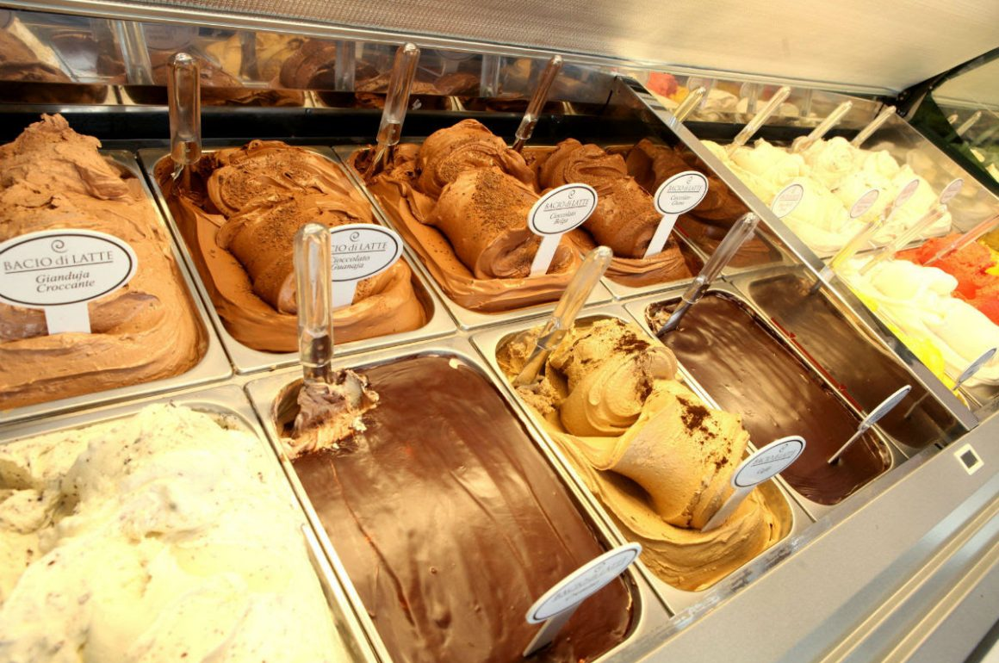

sou filha única
não tenho primos
tenho um sobrenome português e outro alemão
Esportes q já fiz: futvolei, beach tenis(atual),
jazz, sapateado, ginastica ritmica e artistica, natação
não sou gamer
minha cor favorita é lilás
comida favorita: pizza

doce preferido: sorvete
toco um pouco de ukulele(aprendi sozinha)
Falo 4 línguas: português, inglês, francês e espanhol